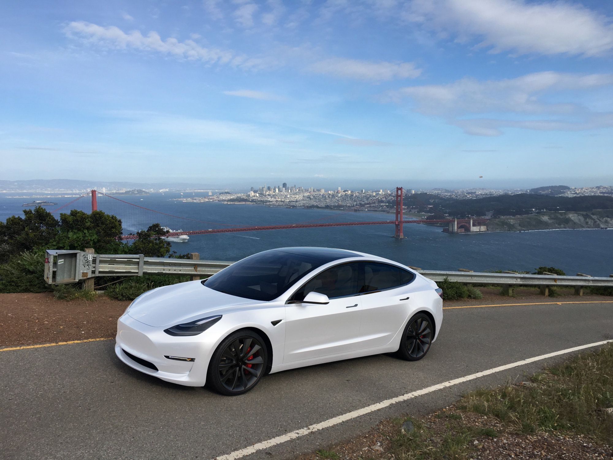
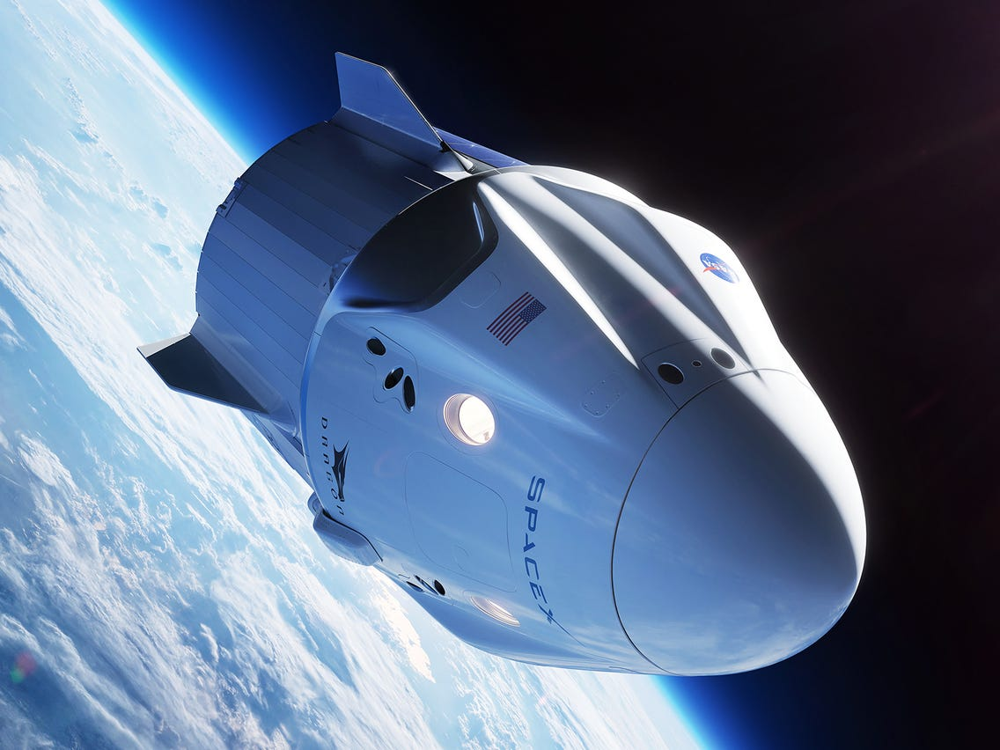

- Home
- >
- Portfólio
- >
- Elon Musk
Elon Musk
Descrição
Elon Musk (1971) é um empreendedor norte-americano de origem sul-africana. É cofundador e CEO da companhia Tesla Motors, pioneira na fabricação de carros elétricos. É o fundador e CEO da SpaceX, a primeira empresa a vender um voo comercial para a Lua. Elon Musk nasceu em Pretória, África do Sul, no dia 28 de junho de 1971.
Tesla Motors
Pioneira na fabricação de carros movidos a bateria, a companhia americana Tesla Motors é uma empresa localizada em Palo Alto, Califórnia, Estados Unidos. Fundada pelos empresários Martin Eberhard e Marc Tarpenning, em 2004, Musk tornou-se um dos seus principais financiadores. O nome, Tesla, é uma referência ao inventor sérvio-americano Nikola Tesla (1856-1943), que registrou mais de 700 patentes, inventou a turbina sem pás e o motor de indução de corrente alternada. O desafio inicial da empresa de Musk era grande: a Tesla queria se consolidar com automóveis elétricos em um país que tradicionalmente consome muita gasolina. Em 2006 a Tesla apresentou o seu primeiro carro o Roadster que tinha autonomia de 394 km com uma única carga, que custava 92 mil dólares. A Tesla Motors lançou também os modelos S e o X. Em 2008 a Tesla quase foi a falência, tendo sido salva por um empréstimo de 456 milhões de dólares fornecido pelo governo norte-americano. Em 2010, a empresa conseguiu cotar as suas ações na bolsa tendo se tornado a primeira montadora americana a negociar depois da Ford (em 1956). Aos poucos, o custo de produção foi caindo e em 2017 a Tesla lançou o Model 3, que custa, na versão mais barata, 35 mil dólares. O Model 3 tinha autonomia de 350 km, ou seja, essa é a distância que o carro consegue percorrer com uma carga de bateria. Em 2017 a Tesla já havia superado o valor de mercado da Ford e da General Motors. Em novembro do mesmo ano a Tesla já acumulava uma lista de quase 500 mil interessados no novo carro elétrico. Para atender a toda essa demanda, Elon Musk construiu uma enorme fábrica de baterias no deserto do Estado de Nevada para abastecer os seus carros.
Spacex
No ano de 2000, Musk fundou a Space Exploration Technologie (SpaceX), para fazer foguetes a custos mais baixos e realizar viagens espaciais. Os dois primeiros foguetes foram o Falcon 1 (lançado pela primeira vez em 2006) e o Falcon 9 (lançado pela primeira vez em 2010). Em janeiro de 2011, a SpaceX tornou-se a primeira empresa no mundo a vender um voo comercial à Lua. Musk desenvolveu um foguete reutilizável que poderia levantar voo e retornar à plataforma que o lançou. A partir de 2012, o foguete Grasshopper fez vários voos curtos para testar a nova tecnologia. A SpaceX também desenvolveu a Nave Dragon, que leva suprimentos para a Estação Espacial Internacional e também projetada para transportar até sete astronautas. No dia 7 de janeiro de 2018, foi lançada a nave Falcon 9 para uma missão secreta chamada Zuma, que pertence ao governo norte-americano e transportou um satélite que ficará na órbita baixa da Terra. Além de ser CEO da SpaceX, Musk também foi o designer chefe na construção dos foguetes Falcon, Dragon e Grasshopper.
Voltar ao início